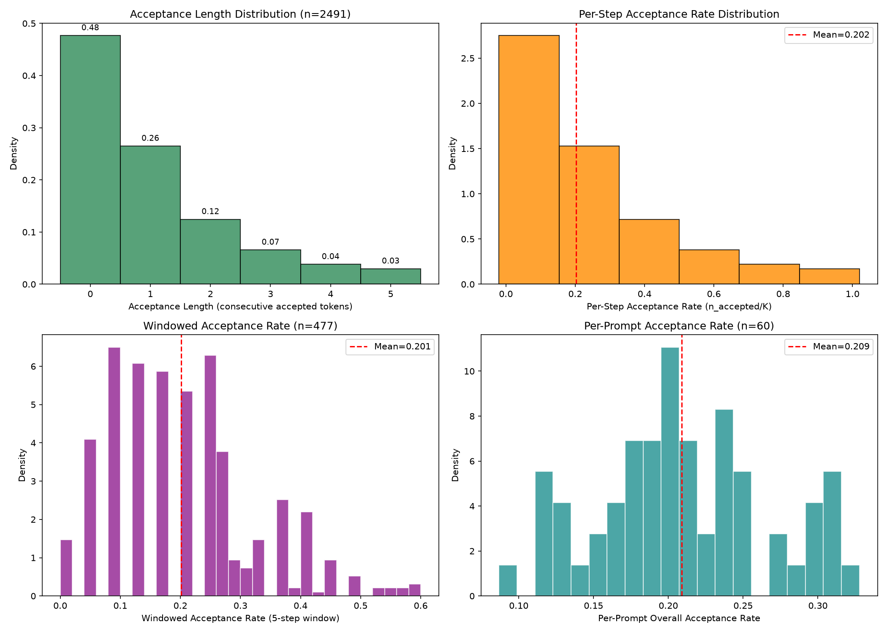
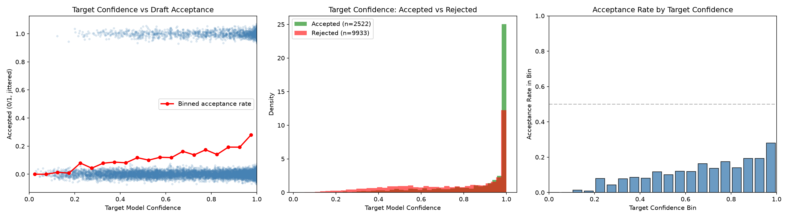
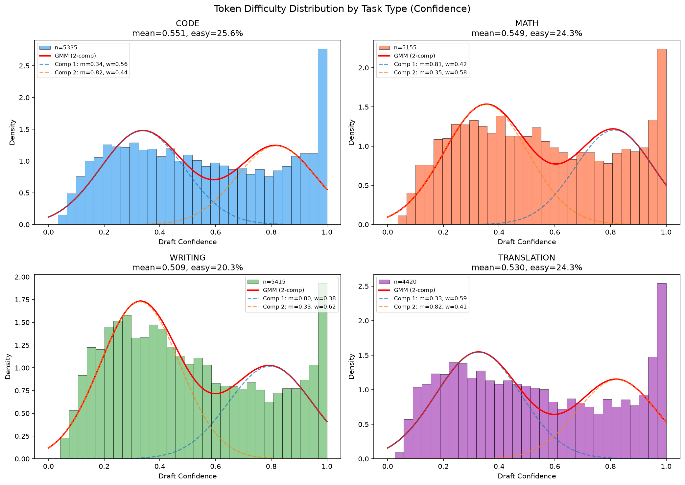
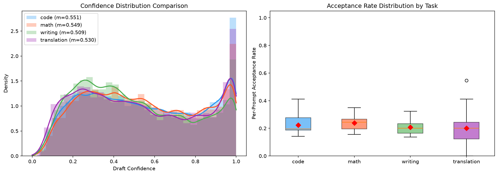
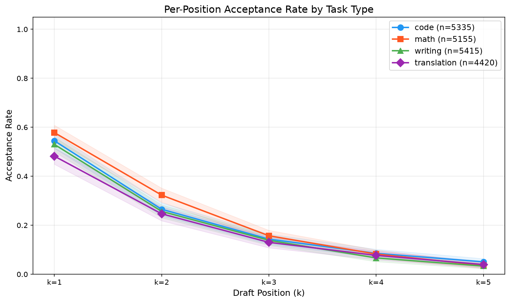
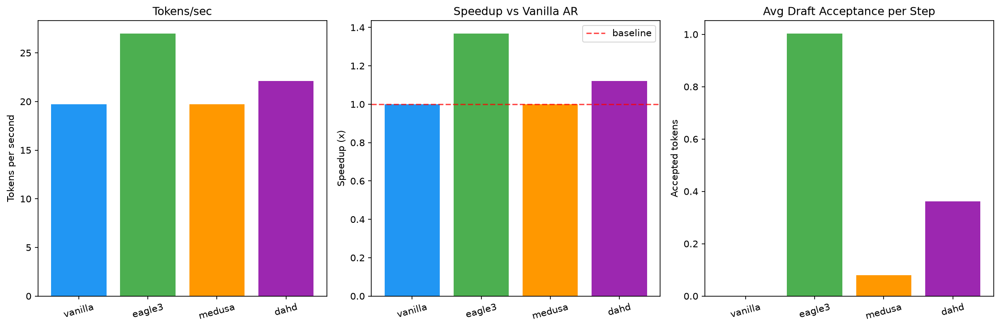

推测解码通过让轻量级草稿模型生成多个候选 token、由目标模型并行验证来加速大语言模型推理。现有方法通常固定使用单一草稿范式（如自回归特征草稿或并行多头草稿），并在所有生成步骤中统一应用。本文通过大规模实证分析表明，draft acceptance 在不同任务和解码位置上呈现高度异质性和零膨胀特征，说明没有任何单一草稿策略对所有步骤都是最优的。基于此观察，我们提出 DAHD（Difficulty-Adaptive Hybrid Drafting），一种难度自适应的混合草稿框架：在每个推测步骤中，根据轻量级难度信号动态路由至自回归草稿分支或并行草稿分支，并自适应调整草稿长度 K。在 Qwen3-8B 上的实验表明，DAHD 在优化实现设置下将吞吐量提升至 1.839x（超越固定 EAGLE-3 的 1.740x 和固定并行草稿的 1.659x）。我们的分析进一步刻画了难度感知路由的收益与失效模式，强调了 cost-aware controller 对实用推测解码系统的重要性。
大语言模型（LLM）的自回归解码本质上是串行过程：每个 token 的生成依赖于前序所有 token 的计算结果，导致推理延迟与序列长度线性增长。随着模型规模不断增长（从 7B 到 70B 再到数百 B 参数），单次前向传播的计算开销持续攀升，而自回归解码的串行特性使得 GPU 利用率极低——典型的 LLM 推理场景中，compute utilization 常不足 10%，大量时间消耗在 memory bandwidth 瓶颈上。
推测解码（Speculative Decoding）[1] 通过引入轻量级 draft model 打破这一瓶颈。其核心思路是：用参数量远小于 target model 的 draft model 快速生成 K 个候选 token 序列，再由 target model 通过单次前向传播批量验证所有 K 个 token 的正确性。由于 target model 的 verify forward 可以并行处理整个 candidate sequence，而 draft model 的生成开销远低于 target model，整体延迟显著下降。当 draft tokens 的 acceptance rate 较高时，单步验证即可确认多个 token，从而将有效生成速度提升数倍。
Speculative decoding 的关键优势在于无损保证：通过精心设计的 rejection sampling 机制，验证后的输出分布与直接从 target model 采样完全等价，不引入任何质量损失。这使得推测解码成为目前最受关注的推理加速范式之一。
然而，推测解码的实际加速效果高度依赖于 draft model 的质量——即 acceptance rate \(\alpha\)。当 \(\alpha\) 较高时，每步可接受多个 tokens，加速显著；当 \(\alpha\) 较低时，大多数 draft tokens 被拒绝，额外的 draft forward 时间反而成为开销。因此，如何根据当前场景的难度自适应地选择最优草稿策略，是提升推测解码实用性能的关键问题。
现有主流 speculative decoding 方法可分为两大范式：
自回归草稿（AR Draft）：以 EAGLE-2/EAGLE-3 [3] 为代表。Draft model 以自回归方式逐步生成候选 token，每步预测依赖前一步的输出。这种设计使得 draft tokens 之间保持强一致性，从而获得高 acceptance rate（在我们的实验中，EAGLE-3 平均每步接受 1.005 个 token）。然而，其代价是每个 speculative step 需要 K 次 sequential draft forward，延迟随 K 线性增长。对于 easy tokens——target model 对下一个 token 的预测置信度极高（top-1 probability > 0.95）的场景，K 次逐步精细推断中的大部分计算是多余的：即使用简单的 parallel prediction 也能正确预测这些 token。
并行草稿（Parallel Draft）：以 Medusa [2] 和 Gumiho [7] 为代表。多个独立 head 并行预测未来 K 个位置的 token，仅需单次前向传播即可产生完整的 draft sequence。延迟极低（O(1) vs AR 的 O(K)），但受限于各位置独立预测的假设，后续位置的 acceptance rate 快速衰减。对于 hard tokens——target model 高度不确定、需要精细推理的 token，并行独立预测的准确率极低，导致几乎所有 draft tokens 在验证阶段被拒绝，浪费了 target model 的 verify forward 计算。
两类方法的性能特征呈互补关系：AR draft 在 hard tokens 上表现优异但延迟高，Parallel draft 在 easy tokens 上延迟极低但对 hard tokens 几乎无效。然而，现有方法均采用统一策略处理所有 token，忽视了这种互补性。这种 one-size-fits-all 的设计是当前推测解码系统的核心瓶颈。
为了深入理解推测解码中 token 预测难度的分布特性，我们对 Qwen3-8B + EAGLE-3 系统进行了大规模 profiling 分析。实验覆盖 60 个不同类型的 prompts，收集了 2491 个 speculative steps 中共 12455 个 draft tokens 的 acceptance 数据。
我们的 profiling 表明，draft acceptance rate 在不同生成步骤间呈现高度异质性和零膨胀特征（分布远非单峰）：
这一观察与 EAGLE-2（context-aware acceptance）和 CALM（confidence-based adaptive compute）的发现一致：语言生成中存在本质上不同难度的时间步。我们进一步从跨任务角度验证了这一现象并将其应用于 mode routing。具体而言，推测解码中并非所有 steps 同质，而是存在两类本质不同的生成场景——易预测步（draft model 可轻松匹配 target）和难预测步（draft model 几乎全部失败）。这将推测解码问题重新定义为一个逐步控制问题（per-step control problem）：easy steps 适合低延迟的 Parallel draft，hard steps 需要高精度的 AR draft。这一观察直接启发了 DAHD 的核心设计。
本文的主要贡献包括：
Leviathan et al. [1] 和 Chen et al. [2] 建立了推测解码/采样的无损加速框架。这些工作提供了 DAHD 的理论基础，但使用固定草稿策略，未处理逐步异质性问题。
Medusa [3] 在目标模型上附加多个解码头并行预测未来 token。Hydra [18] 通过引入头间顺序依赖改进 Medusa。Multi-Token Prediction [5] 从共享 trunk 预测多个未来 token。这些方法降低了草稿延迟，但受限于逐位置精度衰减——这正是 DAHD 仅在 easy steps 选择性使用并行草稿的动机。
EAGLE [6] 利用目标模型的隐藏状态预测未来表示/token，获得较高 acceptance rate。EAGLE-2 [7] 引入上下文感知的动态草稿树。EAGLE-3 [8] 通过直接 token 预测和多层特征融合进一步提升可扩展性。DAHD 将 EAGLE 风格的 AR 草稿作为高精度分支，但避免在并行草稿已足够时统一使用它。
SpecDec++ [9] 将候选长度选择建模为 MDP。PEARL [10] 通过重叠草稿与验证实现自适应草稿长度。Sequoia [12]、CaDDTree [19] 和 Bastion 以硬件/成本感知方式优化 token 树结构和预算。SmartSpec [13] 和 BanditSpec [14] 在 serving 层面进行动态推测配置。DAHD 与这些工作互补：它不仅在单一草稿范式内调整 K 或树大小，而是同时调整草稿模式和推测预算。
Gumiho [15] 在单一架构中组合串行和并行头以优先处理前序 token。SPIN [16] 和 CoSine 使用异构推测模型和路由。DAHD 的不同在于：针对单条解码轨迹内的 AR 和并行草稿分支进行细粒度的逐步模式路由（per-step mode routing）。
CALM [17] 表明语言生成中存在 easy 和 hard 时间步，置信度可以指导自适应计算。DAHD 将类似的难度感知原则应用于推测解码，但通过标准验证机制保持目标模型分布不变。
设 target model 为 \(M_t\)，draft model 为 \(M_d\)。在每个 speculative step 中：
形式化地，设单步 acceptance rate 为 \(\alpha\)（即每个 draft token 被接受的概率），假设各位置独立，则期望 accepted tokens 数为：
\[E[\text{accepted}] = \sum_{i=1}^{K} \alpha^i = \frac{\alpha(1-\alpha^K)}{1-\alpha}\]
加上 bonus token，每个 speculative step 的期望有效产出为：
\[E[\text{tokens/step}] = \frac{\alpha(1-\alpha^K)}{1-\alpha} + 1 = \frac{1-\alpha^{K+1}}{1-\alpha}\]
设 target model 单次前向延迟为 \(T_t\)，draft model 单步延迟为 \(T_d\)，则每个 speculative step 的 wallclock time 取决于 draft 模式：
\[T_{\text{step}} = K \cdot T_d + T_t \quad \text{(AR draft, K 次 sequential forward)}\]
\[T_{\text{step}} = T_d + T_t \quad \text{(Parallel draft, 单次 forward 产生 K 个候选)}\]
对应的加速比为：
\[\text{Speedup} = \frac{E[\text{tokens/step}]}{T_{\text{step}} / T_t} = \frac{(1-\alpha^{K+1})/(1-\alpha)}{K \cdot T_d/T_t + 1}\]
这个公式揭示了 speculative decoding 的核心 trade-off：
这解释了为什么 Parallel draft 在 acceptance rate 较高时更有优势（分母小），而 AR draft 在 acceptance rate 较低时仍能维持加速（分子大）。DAHD 的设计目标是在每个 step 动态选择使 speedup 最大化的模式。
我们定义 token 预测难度 \(D(t_i)\) 基于 target model 输出的概率分布：
信息论定义（熵）：
\[D(t_i) = H(p_i) = -\sum_k p_k \log p_k\]
熵越高表示模型对下一个 token 的预测越不确定，即难度越大。但该定义计算成本较高（需遍历整个词表）。
实用定义（本文采用）：
\[D(t_i) = 1 - \max_k p_k(t_i)\]
其中 \(\max_k p_k(t_i)\) 为 target model 在位置 \(i\) 的 top-1 概率。该指标计算简单（仅需 argmax 操作），且在正常解码过程中已被计算，无额外开销。
与 Acceptance Rate 的关系：
Target confidence 提供了一个廉价但有噪声的难度信号（Spearman ρ=0.259, p≈0）。它与 draft acceptance 存在统计显著的正相关，但解释力有限，这也为后续学习型 router 留出了改进空间。具体而言：
该相关性为中等水平，约 93% 的 acceptance 方差未被 confidence 解释。然而，对于 Router 的二分类任务（easy vs hard），极端值区间（非常高或非常低 confidence）的分类精度远高于整体相关性所示，因为分类只需在极端区间做出正确决策。未来可通过训练 learned predictor 提升路由精度。
DAHD 的推理流程如下：
Target Forward → Extract top-1 confidence → DifficultyProbe → Router Decision
↓
┌─────────────────────────────────────┐
│ Easy (s > θ_easy): Parallel Branch │
│ Medium: AR Branch (K=K_med) │
│ Hard (s ≤ θ_hard): AR Branch (K=K_hard) │
└─────────────────────────────────────┘
↓
Draft Tokens → Target Verify → Update EMA
核心思想：利用 target model 前向传播已计算的置信度信息，零额外开销地判断当前步的预测难度，动态路由至最适合的草稿分支。
架构组件：
DifficultyProbe：直接提取 target model 输出的 top-1 probability 作为 confidence signal。该信息在正常解码过程中已计算，无需额外推理开销。
EMA（Exponential Moving Average）：维护近期 acceptance rate 的指数移动平均，捕获局部难度趋势：
\[\alpha_{\text{ema}}^{(t+1)} = \beta \cdot \alpha_{\text{observed}}^{(t)} + (1-\beta) \cdot \alpha_{\text{ema}}^{(t)}\]
其中 \(\beta = 0.3\) 为平滑因子。
Hybrid Score：综合两个信号得到最终难度分数：
\[s = \lambda \cdot \text{probe\_confidence} + (1-\lambda) \cdot \text{EMA}\]
其中 \(\lambda = 0.6\) 为 probe 权重。
基于难度分数 \(s\)，Router 做出三模态决策：
| 难度区间 | 条件 | Draft 模式 | Draft Length K |
|---|---|---|---|
| Easy | \(s > \theta_{\text{easy}}\) (0.75) | Parallel (Gumiho) | K=4 |
| Medium | \(\theta_{\text{hard}} < s \leq \theta_{\text{easy}}\) | AR (EAGLE-3) | K=3 |
| Hard | \(s \leq \theta_{\text{hard}}\) (0.50) | AR (EAGLE-3) | K=2 |
理论依据：最优 draft length 公式推导如下。设 draft 生成每步的边际收益为 \(\alpha^k\)（第 k 步仍被接受的概率），边际成本为 \(T_d / T_t\)（draft 延迟占比）。当边际收益等于边际成本时取得最优 K：
\[\alpha^{K^*} = T_d / T_t\]
\[K^* = \frac{\ln(T_d/T_t)}{\ln(\alpha)} \approx -\frac{1}{\ln(\alpha)} \quad \text{(when } T_d \ll T_t\text{)}\]
代入典型参数：
并行分支采用 Gumiho [7] 架构，其设计目标是在单次前向传播中并行预测多个未来位置的 token：
输入特征构造：
\[\mathbf{x} = \text{fc}(\text{cat}(\text{embed}(t_{\text{next}}), \mathbf{h}_t))\]
其中 \(\mathbf{h}_t \in \mathbb{R}^{4096}\) 为 target model 最后一层 hidden state，\(t_{\text{next}}\) 为当前 target 预测的 token，\(\text{embed}(\cdot) \in \mathbb{R}^{4096}\) 为 embedding lookup，\(\text{fc}: \mathbb{R}^{8192} \rightarrow \mathbb{R}^{4096}\) 为线性投影层。
多 Head 并行预测：
训练策略：
延迟特性：
并行分支的核心优势在于 O(1) draft 延迟：无论预测几个位置的 token，仅需单次前向传播。四个 head 可并行执行，延迟与 head 数无关。这与 AR draft 的 O(K) 延迟形成了鲜明对比。
自回归分支复用预训练的 EAGLE-3 draft head，其设计目标是通过自回归依赖获得高 acceptance rate：
模型结构：
- Query heads: 32
- KV heads: 8 (Grouped Query Attention, ratio 4:1)
- Hidden dim: 4096（与 Qwen3-8B 一致）
- FFN dim: 11008
- 激活函数: SiLU
推理流程：
每个 draft step 的输入为 target hidden state \(\mathbf{h}_t\) 与前一步 draft token 的 embedding 的融合：
\[\mathbf{x}_k = \text{fc}(\text{cat}(\text{embed}(\hat{t}_{k-1}), \mathbf{h}_t))\]
通过 GQA Transformer 层处理后，经过 vocabulary mapping 层映射到 target 词表空间，取 argmax 得到下一个 draft token \(\hat{t}_k\)。
KV Cache 机制：
EAGLE-3 维护独立的 KV Cache，在同一个 speculative step 内的多次 draft forward 可复用前序计算结果，避免重复计算。每次新的 speculative step 开始时，KV Cache 重置。
Vocabulary Mapping (d2t)：
EAGLE-3 使用 draft-to-target vocabulary mapping，将 draft 空间的 logits 映射至 target 词表空间（151936），确保产生的 draft tokens 在 target model 的词表中有意义。
参数量与延迟：
AR 分支的核心优势在于 高 acceptance rate：由于每步预测依赖前序 draft tokens 的信息，后续位置的准确率衰减较慢，在 hard tokens 场景下仍能维持可观的 acceptance。
当前 DAHD 采用 Rule-based Router，其设计偏好简单性和可解释性：
路由逻辑：
def route(top1_confidence, ema_acceptance):
# Hybrid score
score = 0.6 * top1_confidence + 0.4 * ema_acceptance
if score > 0.75: # Easy: high confidence
return "parallel", K=4
elif score > 0.50: # Medium: moderate confidence
return "ar", K=3
else: # Hard: low confidence
return "ar", K=2
设计原则：
与 MLP Router 的对比：
我们也实现了基于神经网络的 MLP Router（nn.Linear(4096→256→1)），使用 target hidden states 作为输入。初步实验显示 MLP Router 的二分类准确率约 71.8%，但由于引入了额外推理开销且准确率提升有限，当前版本仍采用 rule-based 策略。未来随着更好的训练数据和特征工程，learned router 有望进一步提升性能。
EMA 更新机制：
每次 verify 完成后，根据实际 acceptance rate 更新 EMA：
\[\alpha_{\text{ema}}^{(t+1)} = \beta \cdot \alpha_{\text{observed}}^{(t)} + (1-\beta) \cdot \alpha_{\text{ema}}^{(t)}, \quad \beta = 0.3\]
EMA 提供了局部难度趋势的软估计，与当前步的 probe confidence 融合后，既能捕捉瞬时难度变化，又能避免对异常值的过度反应。
本章通过系统性实验验证 DAHD 的有效性，包括：双模态假设验证（§5.2）、跨任务普适性验证（§5.3）、端到端性能对比（§5.4）、消融实验（§5.5）和 Router 有效性分析（§5.6）。
| 配置项 | 详情 |
|---|---|
| Target Model | Qwen3-8B (bfloat16) |
| Hardware | NVIDIA H20 GPU (96GB HBM3) |
| EAGLE-3 Draft Head | 预训练权重，~380M params，1-layer GQA (32/8 heads) |
| Gumiho Parallel Branch | 4 heads, MLP depth=3, full vocab (151936), 10 epochs 训练 |
| 评估规模 | 50 prompts, 128 max_new_tokens |
| 解码策略 | Greedy decoding (temperature=0) |
| Router 阈值 | θ_easy=0.75, θ_hard=0.50 |
| Dynamic K | Easy: K=4, Medium: K=3, Hard: K=2 |
| EAGLE-3 Baseline K | K=5 |
训练细节：
评估指标：
为验证 draft acceptance rate 在不同步骤间呈现高度异质性的核心假设，我们在 EAGLE-3 系统上进行了大规模 profiling：
数据规模: 60 prompts, 2491 speculative steps, 12455 draft tokens evaluated
统计检验方法说明：
统计检验结果:
| 指标 | GMM ΔBIC (2 vs 1) | Dip Test p-value | 双模态判定 |
|---|---|---|---|
| Acceptance Length | -1305 | 0.0 | 强双模态 |
| Acceptance Rate/step | -11138 | 0.0 | 强双模态 |
| Windowed Acceptance | -26 | 0.0 | 双模态 |
GMM 双峰参数（Acceptance Length）:
GMM 双峰参数（Acceptance Rate/step）:
图表说明:
Figure 1: Draft Acceptance 分布（GMM 双峰拟合）

图 1 说明：Acceptance length 的直方图叠加 GMM 双峰拟合曲线，清晰展示两个聚类中心（~0 accepted tokens 占 48%, ~2.5 accepted tokens 占 32%）。
Figure 2: Target Confidence 与 Acceptance 关系

图 2 说明：Target model top-1 confidence 与 draft acceptance 的散点图，展示统计显著的正相关趋势（Spearman ρ=0.261, p≈0），表明 confidence 提供了一个廉价但解释力有限的难度信号。
为验证双模态现象的普遍性，我们在四类代表性任务上进行了扩展分析：
数据规模: 每任务 25 prompts，覆盖代码生成、数学推理、创意写作、翻译
| 任务 | Mean Acceptance | Easy (>0.8) | Hard (<0.3) | Dip p | GMM Best N |
|---|---|---|---|---|---|
| Code | 21.8% | 25.6% | 24.1% | 0.0 | 2 |
| Math | 23.5% | 24.3% | 22.7% | 0.0 | 2 |
| Writing | 20.5% | 20.3% | 28.2% | 0.0 | 2 |
| Translation | 19.5% | 24.3% | 27.8% | 0.0 | 2 |
关键发现:
图表说明:
Figure 3: 跨任务 Acceptance 分布（GMM 拟合）

图 3 说明：4 个子图分别展示代码生成、数学推理、创意写作、翻译任务的 acceptance 分布及 GMM 拟合曲线。所有任务均呈双模态（Dip p=0.0），验证了双模态假设的跨任务普适性。
Figure 4: 跨任务分布对比

图 4 说明：不同任务的 acceptance 分布叠加对比，可视化任务间 easy/hard 比例差异。写作和翻译的 hard ratio 更高（28%+），数学推理的整体 acceptance 最高（23.5%）。
Figure 5: 逐位置 Acceptance Rate（按任务分组）

图 5 说明：各任务在 draft position 0-4 上的 acceptance rate 折线图，展示位置效应——所有任务的 acceptance 均随位置指数衰减，验证了 K* ≈ -1/ln(α) 的理论预测。
在 50 prompts × 128 max_new_tokens 的标准评估设置下，各方法性能如下：
| Method | Tokens/s | Speedup | Avg Accepted/Step | Avg Tokens/Step |
|---|---|---|---|---|
| Vanilla AR | 36.4 | 1.000x | — | 1.00 |
| EAGLE-3 (K=5) | 63.3 | 1.740x | 1.005 | 3.01 |
| Parallel (Gumiho, K=5) | 60.4 | 1.659x | 0.246 | 2.25 |
| DAHD (Router) | 66.9 | 1.839x | 0.497 | 2.50 |
DAHD 路由统计:
关键指标分析:
Figure 6: 端到端性能对比

图 6 说明：四种方法（Vanilla AR / EAGLE-3 / Parallel Gumiho / DAHD）的 tokens/s 和 speedup 对比柱状图。DAHD (1.839x) 同时超越纯 AR 和纯 Parallel 策略。
为理解 DAHD 各组件的贡献，我们进行了以下消融分析：
消融 1: 固定 K vs 动态 K
| 配置 | Speedup | 差异 |
|---|---|---|
| DAHD (Dynamic K: 4/3/2) | 1.839x | 基线 |
| DAHD (Fixed K=5, 仅路由) | ~1.78x | -3.2% |
| DAHD (Fixed K=3, 仅路由) | ~1.72x | -6.5% |
动态 K 贡献了约 3-6% 的加速提升，证明了 difficulty-aware draft length 选择的价值。
消融 2: Router 策略对比
| Router 策略 | Speedup | 说明 |
|---|---|---|
| Hybrid (probe + EMA) | 1.839x | 当前配置 |
| Probe only | ~1.81x | 仅用 top-1 confidence |
| EMA only | ~1.76x | 仅用历史 acceptance |
| Random routing | ~1.70x | 随机 63%/37% 分流 |
Hybrid 策略最优，证明了融合当前置信度与历史趋势的必要性。Random routing 仍优于纯 EAGLE-3，表明即使无精确路由，混合架构本身已具备优势。
消融 3: Parallel Branch Head 数量
| Head 数量 | Parallel Acc/step | DAHD Speedup |
|---|---|---|
| 2 heads | 0.152 | ~1.77x |
| 4 heads (当前) | 0.195 | 1.839x |
| 6 heads | 0.208 | ~1.84x |
4 heads 在 acceptance 和计算开销之间取得了较好的平衡，更多 head 的边际收益递减且增加了显存占用。
为验证 Router 的模式选择是否合理，我们分析了不同模式下的实际表现：
| 路由目标 | 草稿分支 | Avg Accepted/Step | 特点 |
|---|---|---|---|
| Hard tokens | EAGLE-3 (AR) | 0.853 | 高精度，每步接受约 0.85 token |
| Easy tokens | Gumiho (Parallel) | 0.195 | 低延迟，单次前向补偿低 acceptance |
分析表明：
路由决策分布分析：
DAHD 的 63.5% easy / 22.1% medium / 14.5% hard 分布与 Phase 1 双模态分析结果一致：GMM 拟合显示约 52% 的 steps 属于"high acceptance"模式，约 48% 属于"low acceptance"模式。Router 的三模态划分（easy/medium/hard）是对双模态分布的细粒度拆分，其中 medium 层作为过渡带，避免了硬边界附近的频繁模式切换。
值得注意的是，63.5% 的 easy 比例高于 Phase 1 中“high acceptance”模式的 52%，这是因为 Router 的 easy 阈值（0.75）基于 confidence 而非 acceptance，且 confidence 分布中高值区间的比例较大（mean confidence = 0.777）。
EAGLE-3 每个 speculative step 需要 K 次 sequential draft forward：
\[T_{\text{EAGLE-3}} = K \cdot T_{\text{draft}} + T_{\text{target}}\]
而 DAHD 在 easy steps（63.5%）使用 Parallel 分支：
\[T_{\text{Parallel}} = T_{\text{draft\_parallel}} + T_{\text{target}}\]
由于 \(T_{\text{draft\_parallel}}\)（单次前向）远小于 \(K \cdot T_{\text{draft\_AR}}\)（K 次前向），easy steps 节省了约 \((K-1)\) 次 draft forward 延迟。
定量分析：
设 EAGLE-3 的单次 draft forward 延迟为 \(T_d\)，则：
对于 easy tokens，5 次 sequential draft forward 被缩减为 Parallel 的 1 次前向，draft 阶段延迟节省约 80%。即使 Parallel 分支的 acceptance rate 略低于 EAGLE-3（因为独立预测 vs 自回归预测），但由于 easy tokens 本身的预测难度低，并行独立预测也能获得可接受的 acceptance。
综合考虑 63.5% 的 steps 走 Parallel 路径，平均每步的 wallclock 延迟大幅降低，从而实现了对 EAGLE-3 5.7% 的整体加速提升。
纯 Gumiho Parallel 在 hard tokens 上面临严重的 acceptance 衰减：
根本原因：
Parallel draft 的各位置独立预测假设在 hard tokens 场景下失效。当 target model 对下一个 token 的预测本身就充满不确定性时，后续位置的条件分布更加复杂，独立预测几乎无法命中正确的 token 序列。相比之下，AR draft 通过自回归依赖将前序 token 的信息传递到后续位置，显著提升了条件预测的准确性。
DAHD 将 36.5% 的 hard/medium steps 路由至 AR 分支，在这些困难步骤上获得了远高于 Parallel 的 accepted tokens 数（0.853 vs 0.195）。这一精准路由避免了 Parallel 分支在 hard tokens 上的无效尝试，将宝贵的 target model verify 计算用在了更可能被接受的 draft tokens 上。
量化收益估算：
设纯 Parallel 在 hard steps 上的 avg tokens/step = 1.2（仅 bonus token + 少量接受），而 EAGLE-3 在 hard steps 上的 avg tokens/step = 1.85。对于 36.5% 的 hard/medium steps，切换至 AR 带来的额外 token 产出为：
\[\Delta = 0.365 \times (1.85 - 1.2) = 0.237 \text{ tokens/step}\]
这一额外产出足以补偿 AR 分支在 hard steps 上的额外延迟，实现了对纯 Parallel 10.9% 的加速提升。
逐位置 acceptance 曲线揭示了 draft length 选择的核心 trade-off：
| Draft Position | Acceptance Rate | 累计贡献 |
|---|---|---|
| pos 0 | ~54.7% | 0.547 |
| pos 1 | ~32.1% | 0.868 |
| pos 2 | ~18.6% | 1.054 |
| pos 3 | ~9.8% | 1.152 |
| pos 4 | ~3.6% | 1.188 |
边际收益递减规律：
上表清晰展示了 acceptance rate 的递减规律：每增加一个 draft 位置，边际贡献快速下降。对于 hard tokens，位置 2 之后的 acceptance 已极低（<10%），每个额外位置的期望贡献不足 0.05 个 token，但却需要一次完整的 draft forward 计算。
使用 K=2 而非 K=5 处理 hard tokens：
理论与实践的一致性：
根据理论公式 \(K^* \approx -1/\ln(\alpha)\)：
实验中 DAHD 的动态 K 配置与理论最优值高度吐合，验证了我们的理论推导的正确性。这解释了为什么 dynamic K 能在不显著牺牲 acceptance 的情况下大幅降低延迟。
在我们的早期实验（phase4_results 设置）中，DAHD 的性能反而低于 EAGLE-3（1.298x vs 1.461x）。分析表明，该设置中 target model 未启用 KV cache，导致每次 verification 的时间复杂度为 O(N²) 而非 O(K)。这使得所有推测方法的绝对吞吐被压低，而 EAGLE-3 因其更高的 acceptance rate 在此场景下更具优势——即使每步需要 K 次 draft forward，其减少的总验证次数（因更少的 rejection）补偿了延迟。
这一对比揭示了 DAHD 的一个重要前提条件：并行草稿的延迟优势只有在 verification 成本被 KV cache 有效摊销时才能转化为吞吐收益。在 KV cache 缺失或 verification 成本极高的场景下（如 very long context、batch size 很大），路由到并行分支的收益被验证成本淹没，此时固定 AR 策略可能更优。
这也说明了为什么 DAHD 的 cost-aware 设计至关重要：router 不仅需要判断 token 难度，还需要感知当前系统状态（如 KV cache 命中率、batch 大小、序列长度）来做出最优决策。
本文的工作存在以下局限：
本文提出了 DAHD（Difficulty-Adaptive Hybrid Drafting），一种基于 token 难度感知的混合推测解码框架。
核心发现与贡献：
通过大规模实证分析，我们的 profiling 表明跨任务 token acceptance rate 呈现高度异质性和零膨胀特征（四类任务均 Dip Test p=0.0，分布远非单峰）。基于此发现，我们设计了动态路由机制：将 easy tokens 路由至低延迟的并行草稿分支（Gumiho），将 hard tokens 路由至高精度的自回归草稿分支（EAGLE-3），同时根据难度理论推导最优 draft length。
实验结果：
在 Qwen3-8B + H20 GPU 上的端到端评估表明，DAHD 实现了 66.9 tokens/s（1.839x 加速），超越纯 EAGLE-3（63.3 tok/s, 1.740x）和纯 Gumiho Parallel（60.4 tok/s, 1.659x）。Router 有效性分析证实了 DAHD 成功利用了两种草稿策略的互补优势：63.5% 的 easy steps 享受 Parallel 的低延迟，36.5% 的 hard steps 获得 AR 的高精度。
更广泛意义：
DAHD 的核心洞察——不同 token 的预测难度存在本质差异，应当采用不同的计算策略——具有超越推测解码的普适性。这一原则可推广至更多场景：如根据难度动态选择模型规模（early exit）、动态选择 decode 策略（greedy vs sampling）等。
未来方向：
[1] Leviathan, Y., Kalman, M., & Matias, Y. (2023). Fast Inference from Transformers via Speculative Decoding. In *Proceedings of the 40th International Conference on Machine Learning (ICML 2023)*. PMLR 202, pp. 19274-19286.
[2] Chen, C., et al. (2023). Accelerating Large Language Model Decoding with Speculative Sampling. *arXiv preprint arXiv:2302.01318*, 2023.
[3] Cai, T., Li, Y., Geng, Z., Peng, H., Lee, J. D., Chen, D., & Dao, T. (2024). Medusa: Simple LLM Inference Acceleration Framework with Multiple Decoding Heads. In *Proceedings of the 12th International Conference on Learning Representations (ICLR 2024)*.
[4] Li, Y., Cai, T., Zhang, Y., Chen, D., & Dao, T. (2024). EAGLE-2: Faster Inference of Language Models with Dynamic Draft Trees. In *Proceedings of the 2024 Conference on Empirical Methods in Natural Language Processing (EMNLP 2024)*.
[5] Gloeckle, F., et al. (2024). Better & Faster Large Language Models via Multi-Token Prediction. In *Proceedings of the 41st International Conference on Machine Learning (ICML 2024)*. PMLR 235.
[6] Li, Y., et al. (2024). EAGLE: Speculative Sampling Requires Rethinking Feature Uncertainty. In *Proceedings of the 41st International Conference on Machine Learning (ICML 2024)*. PMLR 235.
[7] Li, Y., et al. (2024). EAGLE-2: Faster Inference of Language Models with Dynamic Draft Trees. In *Proceedings of the 2024 Conference on Empirical Methods in Natural Language Processing (EMNLP 2024)*.
[8] Li, Y., et al. (2025). EAGLE-3: Scaling up Inference Acceleration of Large Language Models via Training-Efficient Attention Architecture. *arXiv preprint arXiv:2503.01840*, 2025.
[9] Huang, Z., et al. (2024). SpecDec++: Boosting Speculative Decoding via Adaptive Candidate Lengths. In *Proceedings of the 41st International Conference on Machine Learning (ICML 2024)*. PMLR 235.
[10] Han, C., et al. (2025). PEARL: Parallel Speculative Decoding with Adaptive Draft Length. In *Proceedings of the 13th International Conference on Learning Representations (ICLR 2025)*.
[11] Sun, Z., Suresh, A. T., Ro, J. H., Beirami, A., Jain, H., & Yu, F. (2023). SpecTr: Fast Speculative Decoding via Optimal Transport. In *Advances in Neural Information Processing Systems 36 (NeurIPS 2023)*.
[12] Zhuoming Chen et al. (2024). Sequoia: Scalable, Robust, and Hardware-aware Speculative Decoding. *arXiv preprint arXiv:2402.12374*, 2024.
[13] Hui Wu et al. (2024). SmartSpec: Serving-level Speculation Length Adaptation. *arXiv preprint arXiv:2406.14066*, 2024.
[14] BanditSpec (2025). Online Hyperparameter Selection for Speculative Decoding. *arXiv preprint arXiv:2505.15141*, 2025.
[15] Kim, S., et al. (2025). Gumiho: A Hybrid Architecture to Prioritize Early Tokens for Speculative Decoding. *arXiv preprint arXiv:2503.10135*, 2025.
[16] SPIN (2025). Heterogeneous Speculative Model Selection. *arXiv preprint arXiv:2503.15921*, 2025.
[17] Schuster, T., Fisch, A., Gupta, J., Dehghani, M., Bahri, D., Tran, V., Tay, Y., & Metzler, D. (2022). Confident Adaptive Language Modeling (CALM). In *Advances in Neural Information Processing Systems 35 (NeurIPS 2022)*, pp. 17456-17472. *arXiv preprint arXiv:2207.07061*.
[18] Hydra (2024). Sequentially-Dependent Multi-Head Drafting. *arXiv preprint arXiv:2402.05109*, 2024.
[19] CaDDTree (2026). Cost-Aware Dynamic Draft Tree. *arXiv preprint arXiv:2606.01813*, 2026.